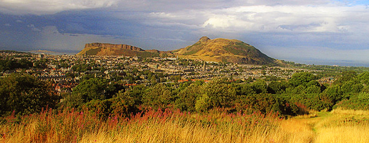

Wednesday, May 1, 2013
Venue: University of Edinburgh, Informatics Forum G.07 (directions)
09:15-09:35 |
Registration (ground floor of the Informatics Forum)Tea and Coffee with Mini Danish Selection |
|
09:35-09:45 |
Welcome |
|
| 09:45-10:25 | Shai Shalev-Shwartz (Jerusalem, Israel) | |
| Stochastic dual coordinate ascent methods for regularized loss minimization (paper) | ||
10:25-10:45 |
Break (Tea & Coffee with Biscuits) |
|
| 10:45-11:25 | Anatoli Juditsky (Joseph Fourier, France) | |
| Low iteration cost algorithms for large-scale nonsmooth learning problems | ||
| 11:30-12:10 | Peter Richtárik (Edinburgh, UK) | |
| Mini-batch primal and dual methods for support vector machines (paper) | ||
12:10-13:45 |
POSTER SESSION + Lunch(Informatics Forum, 4th level, room: Mini Forum 2) |
|
| 13:45-14:25 | Imre Pólik (SAS Institute, USA) | |
| Big data optimization at SAS | ||
| 14:30-15:10 | Olivier Fercoq (Edinburgh, UK) | |
| Smooth minimization of nonsmooth functions by parallel coordinate descent | ||
15:10-15:45 |
Break (Tea and Coffee with Mini Doughnuts) |
|
| 15:45-16:25 | Zaid Harchaoui (INRIA, France) | |
| Large-scale learning with conditional gradient algorithms | ||
| 16:30-17:10 | Richard Samworth (Cambridge, UK) | |
| Optimisation challenges in modern statistics |
Thursday, May 2, 2013
Venue: University of Edinburgh, Informatics Forum G.07 (directions)09:15-09:45 |
Tea & Coffee with Mini Muffin Selection |
|
| 09:45-10:25 | Steve Wright (Wisconsin-Madison, USA) | |
| Randomized optimization algorithms for learning | ||
10:25-10:45 |
Break (Tea & Coffee with Biscuits) |
|
| 10:45-11:25 | Martin Takáč (Edinburgh, UK) | |
| Alternating maximization: unifying framework for 8 sparse PCA formulations and efficient parallel codes (paper) | ||
| 11:30-12:10 | Martin Jaggi (Ecole Polytechnique, France) | |
| Frank-Wolfe optimization with applications to structured prediction (paper) | ||
12:10-13:45 |
POSTER SESSION + Lunch(Informatics Forum, 4th level, room: Mini Forum 2) |
|
| 13:45-14:25 | Jacek Gondzio (Edinburgh, UK) | |
| Second order methods for L1-regularization | ||
| 14:30-15:10 | Rob Freund (MIT, USA) | |
| The Frank-Wolfe algorithm: new results, connections to statistical boosting, and computation | ||
15:10-15:45 |
Break (Tea & Coffee with Mini Fruit Skewers) |
|
| 15:45-16:25 | Des Higham (Strathclyde, UK) | |
| Trick or Tweet? |
POSTERS
| Waqquas A. Bukhsh | Optimization Model for Islanding of Power Systems |
| Pablo González-Brevis | A Natural Stabilized Column Generation Method |
| Danica Greetham | Evaluating Forecasts of Individual Energy Usage |
| Martin Jaggi | Block Coordinate Frank-Wolfe for Structural SVMs |
| Feng Qiang | PSMG: A Parallel Problem Generator for a Structure Conveying Modelling Language for Mathematical Programming |
| Martin Takáč | Distributed Coordinate Descent for Big Data Optimization |
| Rachael Tappenden | Inexact Coordinate Descent |
| Tuomo Valkonen | Computational Problems in Magnetic Resonance Imaging |
Friday, May 3, 2013
Morning: Light trek to Arthur's Seat
On Friday morning there is an optional walk / light trek to the top of Arthur's Seat—a 350 millions years old volcano in the city centre rising 251 meters above the sea level—offering magnificient views of Edinburgh and the Firth of Forth. We are departing at 9:30 sharp from the entrance of Informatics Forum, please plan to arrive 10 minutes earlier.

"The views from the summit [of Arthur's seat] are awesome. The city itself is a real gem, Edinburgh is in my own opinion the most beautiful and fascinating city in Britain by a mile. [www.TrekkingBritain.com]
While the walk is reasonably light, good footwear is recommended as there will be some ascending to do. It is recommended that you bring along a light weather-proof jacket; it can get windy up on the hill. Also, please bring enough water and light refreshments with you.
09:20-09:30 |
Meeting in front of the Informatics Forum |
|
| 09:30-12:30 | Light trek to the top of Arthur's Seat |
|
12:30-14:00 |
Lunch (individual) |
We are not going to walk straight to the Arthur's Seat. Instead, we will take a detour and first walk through the George Square campus towards the National Museum of Scotland (entrance free, great exhibits) and the Elephant house, the birthplace caffe of Harry Potter. Continuing along the 300m long George IV Bridge built in 1832, we enter the Royal Mile (a 1 mile long backbone of Edinburgh's historic centre joining the Edinburgh Castle and the Holyrood Abbey) near the High Court of Justiciary, Scotland's supreme criminal court. From that point we will walk along the Royal Mile, away from the Castle and towards the Holyrood Abbey, i.e., down the hill, passing many points of interest which you might want to visit if your are staying in Edinburgh a bit longer: St. Gile's Cathedral (Mother Church of Presbyterianism), Mary King's Close, North Bridge, Canongate Kirk, Scottish Parliament Building, Dynamic Earth Science Centre, Palace of Holyroodhouse and Queen's Gallery. Once at the end of the Royal Mile we enter the Holyrood Park, walking along a foot path (called Radical Road) below Salisbury Crags—a stretch of over 46 meters high cliffs of dolerite and columnal basalt offering spectacular views of the city centre. At the end of the path is the foot of Arthur's Seat; from there it is just a 20 min walk up to the summit point. We will return to the Royal Mile via a different route through the Holyrood Park, passing by the St. Margaret's Loch and the ruins of St Anthony's Chapel.
Afternoon: Colloquium
Venue: Lecture Theatre C, 3rd floor of James Clerk Maxwell Building (JCMB) (directions)
15:30-16:00 |
Coffee & Tea with Carrot Cake(JCMB 5th floor; room 5212, Common Area) |
|
| 16:00-17:00 | Prof Steve Wright (University of Wisconsin Madison) | |
| Some sparse optimization problems and how to solve them | ||
| 17:00-17:10 | Best Poster Award Ceremony | |
17:15-19:00 |
Networking reception(JCMB 3rd floor; Costa Coffee Area) |


{kind=link}
{kind=link}